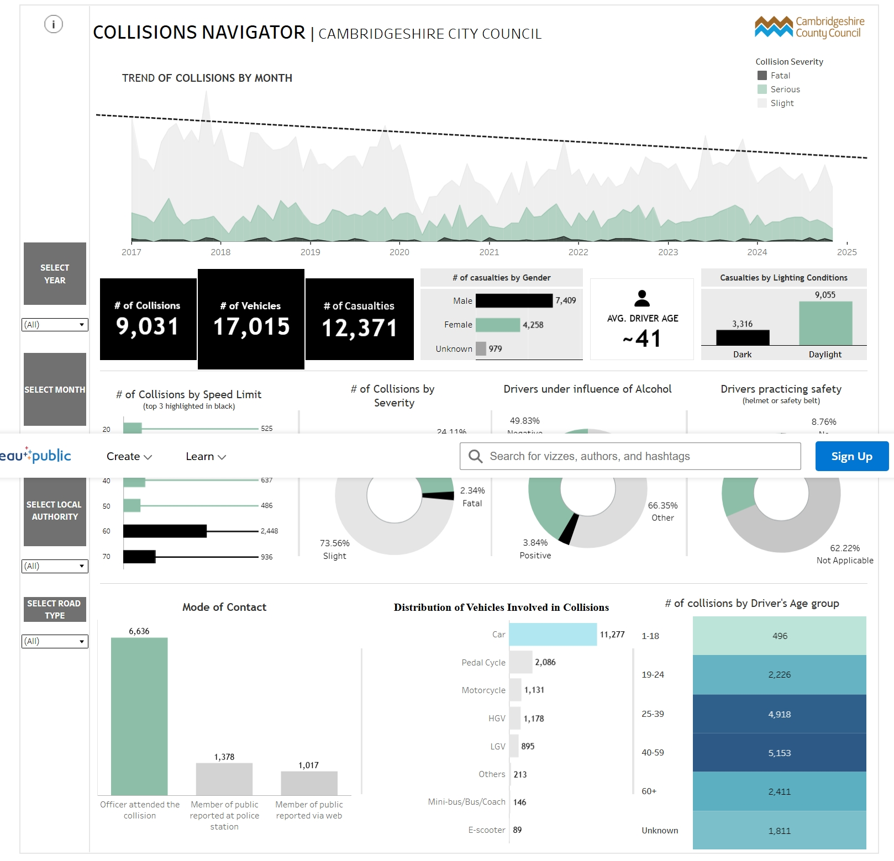

Business Analyst | Product Manager
I'm a digital problem solver working across product, data, and design. I combine business analysis, UX research, and strategic thinking to design and deliver user-focused digital products. My interests lie in evidence-based decision making, inclusive design, and tech for good.
Let me know by dribbling this ball whenever you visit my portfolio.
Redesigned an internal CRM performance dashboard by integrating predictive scoring using random forests and decile-based evaluation models. Enabled better call centre oversight and improved coaching outcomes.
View ProjectLed a quantitative study for a matchmaking platform to identify top-valued user features using simulation modeling, MDE thresholds, and logistic regression targeting. Insights directly influenced the product roadmap.
View ProjectUsed Python to build a predictive model forecasting donation patterns. Delivered segmentation insights and improved campaign targeting with NLP and clustering methods.
View ProjectCreated a comprehensive dashboard for Cambridgeshire City Council using Tableau to analyse over 9,000 road collisions. Applied machine learning in R to build an alert system that predicts high-risk periods. The project aimed to improve road safety using data-led decisions, and included an action plan and risk alerts for emergency services and the public.
 View Tableau DashboardEmail: akash.dahiya@ample.com
GitHub: akash-dahiya
LinkedIn: linkedin.com/in/akash-dahiya